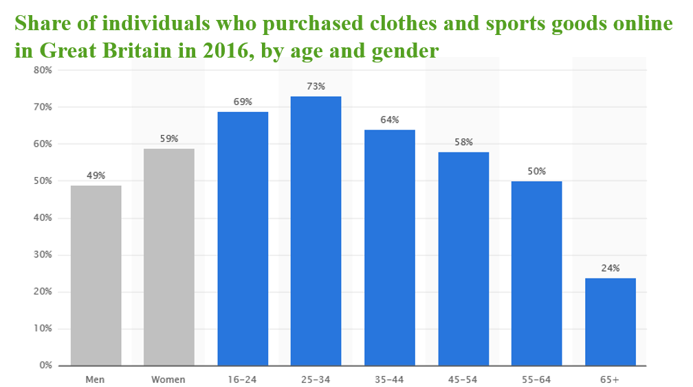

Welcome to Sivan's page
This statistic displays the share of individuals in Great Britain who purchased clothes and sports goods online in 2016, by age and gender. Purchasing clothing online was more common among 16-24 (69%) and 25-34 (73%) age group. Therefore, this is a potential marketing platform to advertise and attract the target audience.
-The way people listening to music is changing, more people are now streaming music's from apps and online, such as Spotify.
-Millennials are the dominant users for Spotify, with 33% of the users are 15-24 and 24% 25-34 (Spotify, 2016).
YouTube is also the most popular website that have been brought up during discussions with 18-24 age group. An example of successful YouTube Strategy was Asda’s, where they have partnered up with a popular British YouTuber Zoella and Tanya Burr to develop content called Mum’s Eye View. The channel had acquired 750,000 views in 8 weeks.
Last updated:03/02/2017